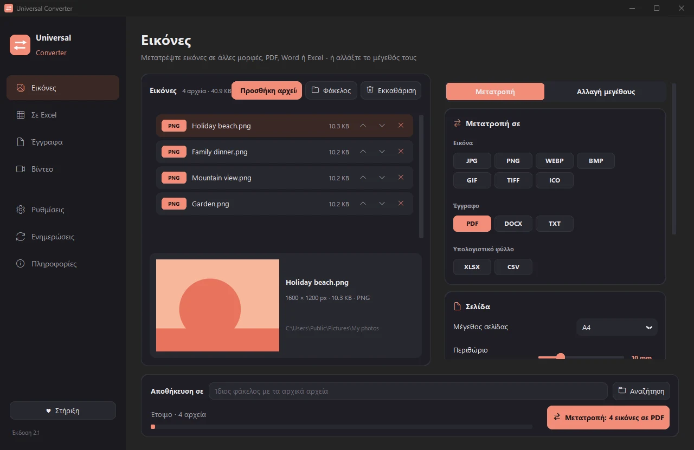
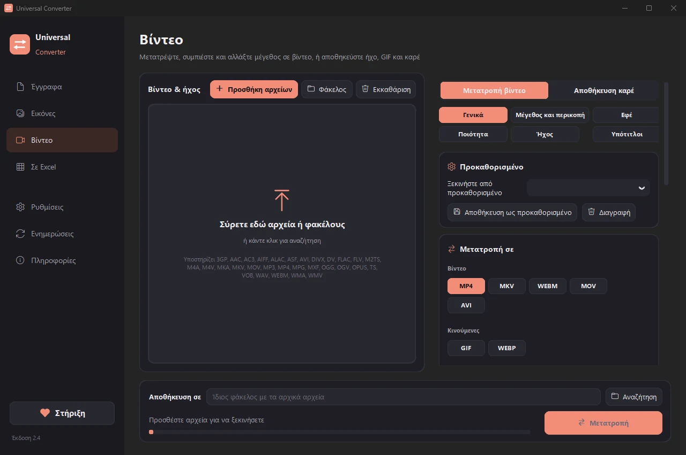
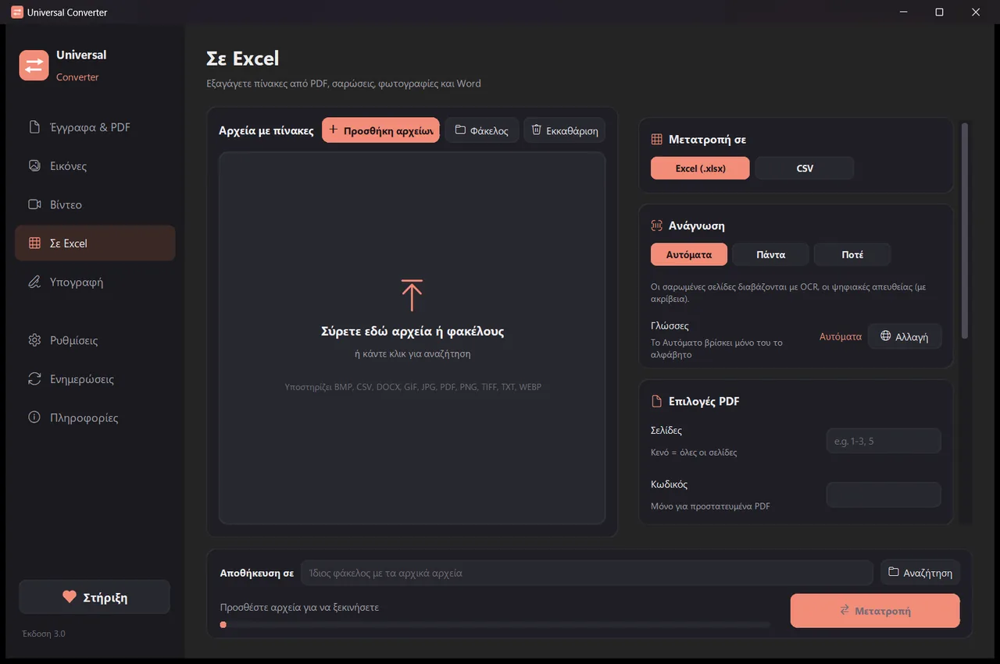
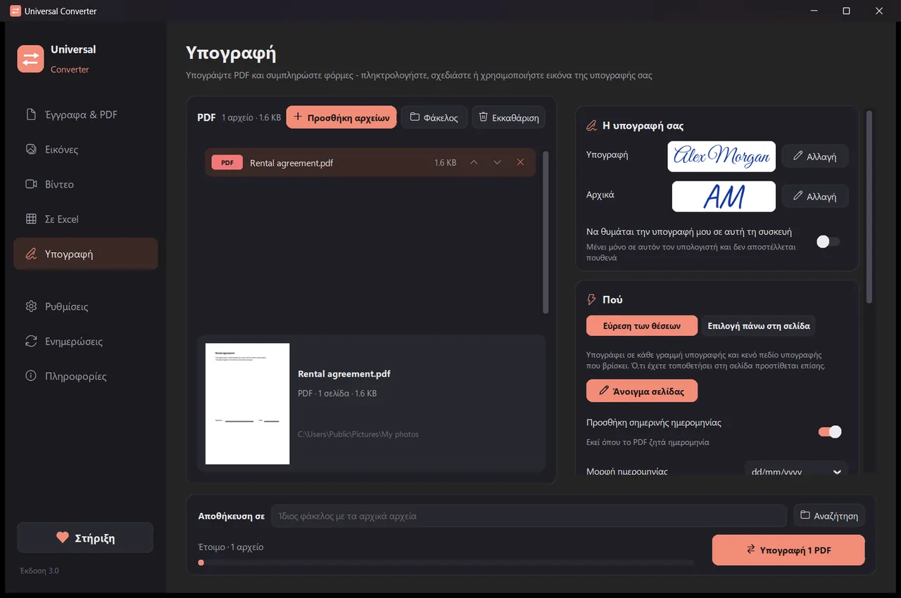

Μετατρέψτε τα αρχεία σας στη δική σας συσκευή
Εικόνες, έγγραφα, βίντεο και ήχος, PDF και πίνακες σε Excel, όλα σε μία εφαρμογή. Τίποτα δεν ανεβαίνει: τα αρχεία σας δεν φεύγουν ποτέ από τη συσκευή σας.
Εγκατάσταση και ενημερώσεις
- Ανοίξτε το .dmg που κατεβάσατε και σύρετε το Universal Converter στις Εφαρμογές.
- Ανοίξτε την εφαρμογή. Την πρώτη φορά το macOS την μπλοκάρει, επειδή δεν είναι υπογεγραμμένη από την Apple: πατήστε «Τέλος».
- Ανοίξτε Ρυθμίσεις συστήματος > Απόρρητο και ασφάλεια, κυλήστε προς τα κάτω, πατήστε «Άνοιγμα ούτως ή άλλως» και δώστε τον κωδικό σας. Αυτό γίνεται μόνο μία φορά.
Ενημερώσεις: αν το επιτρέψετε όταν ανοίξει πρώτη φορά, η εφαρμογή ελέγχει για νέες εκδόσεις σε κάθε εκκίνηση, επαληθεύει την ψηφιακή τους υπογραφή και τις εγκαθιστά όταν το επιλέξετε.
Εγκατάσταση και ενημερώσεις
- Πατήστε «Λήψη για Android» από το κινητό σας.
- Ανοίξτε το αρχείο που κατέβηκε. Αν το ζητήσει το Android, επιτρέψτε στον περιηγητή ή στη διαχείριση αρχείων να εγκαθιστά εφαρμογές.
- Πατήστε «Εγκατάσταση».
Ενημερώσεις: η εφαρμογή ελέγχει περίπου μία φορά την ημέρα και σας ενημερώνει όταν υπάρχει νέα έκδοση. Κατεβάστε την με τον ίδιο τρόπο και εγκαταστήστε την πάνω από την παλιά· οι ρυθμίσεις σας διατηρούνται.

Ιδιωτικό
Όλα γίνονται στη συσκευή σας. Χωρίς ανεβάσματα, χωρίς αναμονή, χωρίς όρια μεγέθους.
Δωρεάν
Δωρεάν στη χρήση, χωρίς διαφημίσεις, λογαριασμό ή υδατογράφημα.
18 γλώσσες
Ελληνικά, αγγλικά, ισπανικά, ιταλικά, γερμανικά, γαλλικά, πορτογαλικά, πολωνικά, ρωσικά, αραβικά, εβραϊκά, κινεζικά, ιαπωνικά, κορεατικά, ταμίλ, αφρικάανς, γιορούμπα και χάουσα.
Πέντε εργαλεία σε ένα παράθυρο

Έγγραφα & PDF
Μετατροπή μεταξύ PDF, Word, ODT, RTF, TXT, Markdown, HTML, EPUB, PowerPoint και Excel. Σελίδες σε εικόνες και ένωση πολλών αρχείων σε ένα PDF. Οι γραμματοσειρές, τα μεγέθη και τα χρώματα διατηρούνται. Μικρύνετε αρχεία PDF στο μέγεθος που θέλετε.
Εικόνες
Μετατροπή μεταξύ JPG, PNG, WEBP, TIFF, BMP, GIF και ICO. Αλλαγή μεγέθους σε pixel, ποσοστό ή μέγεθος αρχείου, ένωση εικόνων σε PDF ή Word, και ανάγνωση του κειμένου στις εικόνες (OCR). Μπορείτε να προσθέσετε και PDF: κάθε σελίδα γίνεται εικόνα.

Βίντεο
Μετατροπή βίντεο μεταξύ MP4, MKV, WebM, MOV και AVI, και συμπίεση, με AV1, H.265, H.264 ή VP9. Περικοπή, κόψιμο, περιστροφή και αλλαγή μεγέθους, GIF, αποθήκευση καρέ ως εικόνες, ή μόνο ο ήχος σε MP3, M4A, FLAC, WAV, OGG ή Opus. Στο Android: MP4, MKV, WebM, MOV ή GIF, ή μόνο ο ήχος σε M4A, OGG ή WAV· περικοπή, κόψιμο, περιστροφή, αλλαγή μεγέθους και αποθήκευση καρέ.

Σε Excel
Βγάλτε πίνακες από PDF, σαρώσεις και φωτογραφίες σε Excel ή CSV: αντίγραφα κίνησης λογαριασμού, τιμολόγια, τιμοκατάλογοι. Διαβάζει ελληνικά, αγγλικά, ισπανικά και πάνω από 30 ακόμη γλώσσες.

Υπογραφή
Υπογράψτε PDF και συμπληρώστε φόρμες. Πληκτρολογήστε το όνομά σας με γραφικό στυλ, σχεδιάστε την υπογραφή σας ή χρησιμοποιήστε φωτογραφία της. Η εφαρμογή βρίσκει μόνη της τις γραμμές υπογραφής ή κάνετε κλικ εκεί που μπαίνουν η υπογραφή, τα αρχικά, η ημερομηνία, κείμενο ή σημάδια. Υπογράψτε πολλά αρχεία μαζί· τα αρχικά αρχεία μένουν ανέγγιχτα.
- Χρησιμοποιεί την κάρτα γραφικών για τα βίντεο όταν γίνεται: συνήθως 5 έως 20 φορές πιο γρήγορα.
- Σύρετε ολόκληρους φακέλους: όλα τα αρχεία μετατρέπονται μαζί.
- Σας λέει όταν ένα αρχείο ανήκει σε άλλη καρτέλα και το μεταφέρει εκεί με ένα κλικ.
- Σας ενημερώνει για νέες εκδόσεις· στα Windows και το Mac μπορεί να τις εγκαταστήσει για εσάς, με ψηφιακή επαλήθευση.
- Φωτεινή και σκούρα εμφάνιση, όπως η συσκευή σας.
Πώς λειτουργεί
- Ανοίξτε το Universal Converter και επιλέξτε Έγγραφα & PDF · Εικόνες · Βίντεο · Σε Excel · Υπογραφή στα αριστερά.
- Σύρετε τα αρχεία σας ή έναν ολόκληρο φάκελο στο παράθυρο, ή πατήστε Προσθήκη αρχείων.
- Πατήστε Μετατροπή. Τα νέα αρχεία αποθηκεύονται δίπλα στα αρχικά ή στον φάκελο που επιλέγετε.
Τι μπορεί να κάνει
- Μετατροπή PDF σε Word
- Μετατροπή εγγράφων Word σε PDF
- Ένωση πολλών αρχείων σε ένα PDF
- Συμπίεση PDF στο μέγεθος που θέλετε
- Μετατροπή σελίδων PDF σε εικόνες JPG
- Σαρωμένο έγγραφο σε επεξεργάσιμο αρχείο Word
- Μετατροπή εικόνων μεταξύ JPG, PNG, WEBP και άλλων
- Αλλαγή μεγέθους εικόνων ή μείωση σε μέγεθος αρχείου
- Ένωση φωτογραφιών σε ένα PDF
- Αντιγραφή του κειμένου από εικόνα (OCR)
- Συμπίεση βίντεο χωρίς ανέβασμα
- Μετατροπή βίντεο μεταξύ MP4, MKV, WebM, MOV και AVI
- Αποθήκευση του ήχου ενός βίντεο σε MP3
- GIF από βίντεο
- Πίνακες από PDF σε Excel
- Μετατροπή κίνησης λογαριασμού από PDF σε Excel
- Εξαγωγή πινάκων από τιμολόγια PDF σε Excel
- Υπογραφή PDF
- Συμπλήρωση φόρμας PDF
Ερωτήσεις
Είναι πραγματικά δωρεάν;
Ναι. Το Universal Converter είναι δωρεάν στη χρήση, χωρίς διαφημίσεις, λογαριασμό ή χρονικό όριο. Αν σας βοηθά, μπορείτε να στηρίξετε την ανάπτυξή του με μια εθελοντική συνεισφορά, αλλά δεν είναι ποτέ υποχρεωτικό.
Ανεβαίνουν κάπου τα αρχεία μου;
Όχι. Κάθε μετατροπή γίνεται στη δική σας συσκευή, γι' αυτό λειτουργεί και χωρίς σύνδεση στο internet. Η εφαρμογή συνδέεται μόνο για να ελέγξει για ενημερώσεις, για να κατεβάσει τα αλφάβητα αναγνώρισης κειμένου που επιλέγετε και, αν το επιτρέψετε, για να στείλει ανώνυμες αναφορές σφαλμάτων.
Τα Windows δείχνουν προειδοποίηση SmartScreen. Είναι φυσιολογικό;
Ναι. Το πρόγραμμα εγκατάστασης δεν έχει ακόμη ψηφιακή υπογραφή κώδικα, οπότε τα Windows δεν το αναγνωρίζουν. Επιλέξτε «Περισσότερες πληροφορίες» και μετά «Εκτέλεση οπωσδήποτε». Οι επόμενες ενημερώσεις επαληθεύονται ψηφιακά από την ίδια την εφαρμογή. Ή εγκαταστήστε το από το Microsoft Store, που δεν δείχνει προειδοποίηση.
Πώς το ανοίγω σε Mac;
Ανοίξτε το αρχείο που κατεβάσατε και σύρετε το Universal Converter στις Εφαρμογές. Η εφαρμογή δεν είναι υπογεγραμμένη από την Apple, οπότε την πρώτη φορά που την ανοίγετε το macOS τη μπλοκάρει: πατήστε «Τέλος», μετά ανοίξτε Ρυθμίσεις συστήματος > Απόρρητο και ασφάλεια, πατήστε «Άνοιγμα ούτως ή άλλως» και δώστε τον κωδικό σας. Χρειάζεται μόνο μία φορά.
Πώς το εγκαθιστώ σε Android;
Κατεβάστε το APK στο κινητό, ανοίξτε το και επιτρέψτε την εγκατάσταση όταν σας ζητηθεί (Android 10 ή νεότερο). Και οι 18 γλώσσες είναι ενσωματωμένες· επιλέξτε μία στις Ρυθμίσεις της εφαρμογής. Η εφαρμογή σας ενημερώνει όταν υπάρχει νέα έκδοση.
Σε ποιες γλώσσες είναι;
Η εφαρμογή είναι στα ελληνικά, αγγλικά, ισπανικά, ιταλικά, γερμανικά, γαλλικά, πορτογαλικά, πολωνικά, ρωσικά, αραβικά, εβραϊκά, κινεζικά, ιαπωνικά, κορεατικά, ταμίλ, αφρικάανς, γιορούμπα και χάουσα. Τη γλώσσα τη διαλέγετε στην εγκατάσταση ή αργότερα στις Ρυθμίσεις.